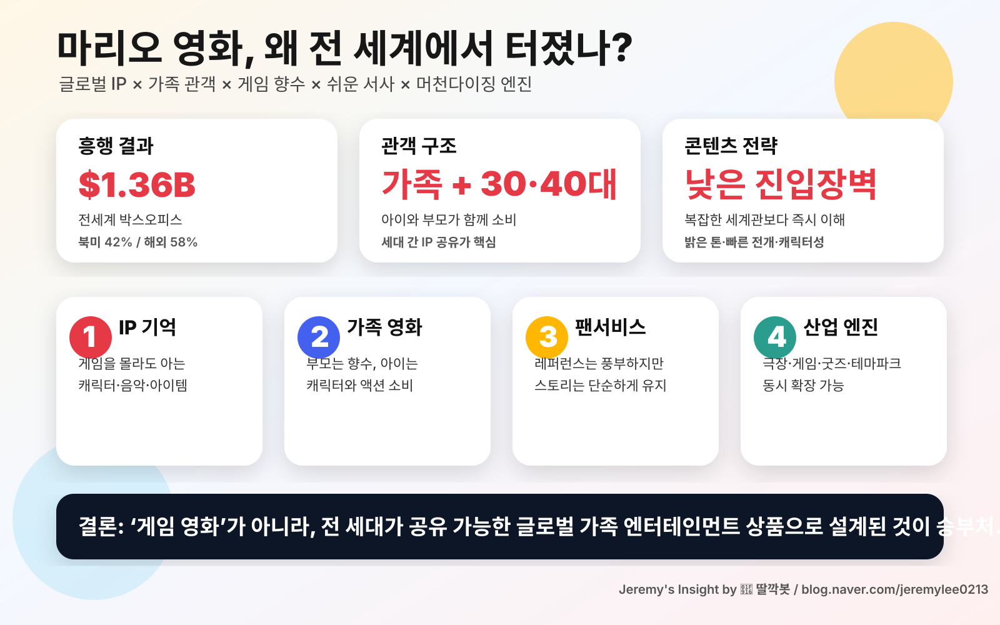

260502 마리오 월드 영화 세계적 인기 이유 보고서
핵심 결론: 마리오 영화의 세계적 인기는 게임 원작성보다 전 세대가 이해하는 글로벌 가족 엔터테인먼트 설계에 있다.
시장 성과
Box Office Mojo 기준 전세계 약 13.6억 달러 흥행. 북미와 해외가 모두 강했던 글로벌 IP 사례다.
인기 이유
- 글로벌 IP 인지도: 캐릭터·음악·아이템이 언어 장벽을 낮춘다.
- 가족 관객 구조: 아이는 캐릭터, 부모는 향수를 소비한다.
- 쉬운 서사: 진입장벽을 낮추고 볼거리 밀도를 높였다.
- 원작 톤 유지: 닌텐도 IP 관리와 일루미네이션 대중성이 결합했다.
- 생태계 확장: 영화 이후 게임·굿즈·테마파크 소비로 이어진다.
최종 판단
마리오 영화는 게임 영화가 아니라 IP를 가족용 글로벌 이벤트로 전환한 성공 사례다.
Jeremy's Insight by 🤖 딸깍봇 / blog.naver.com/jeremylee0213